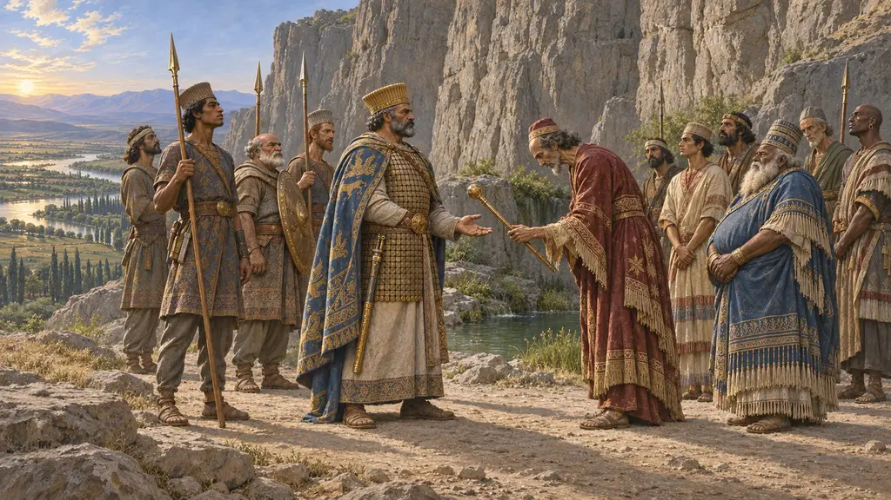
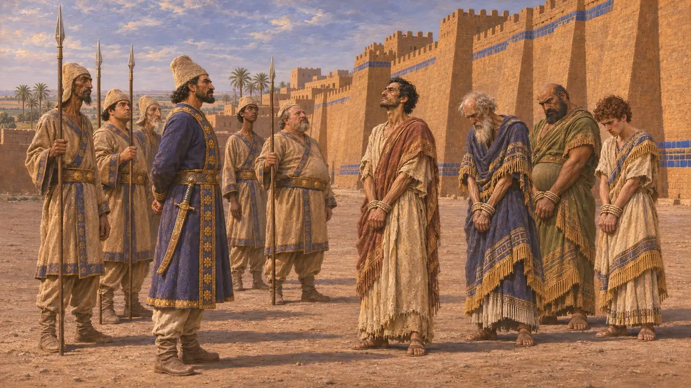
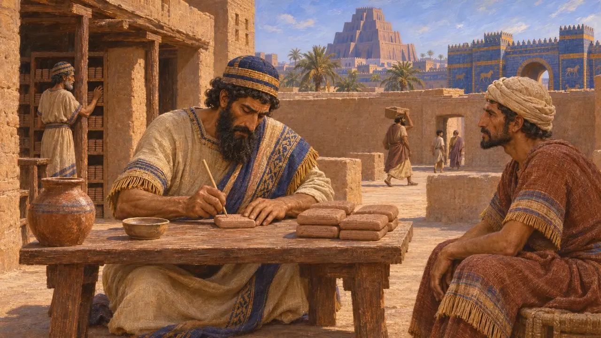
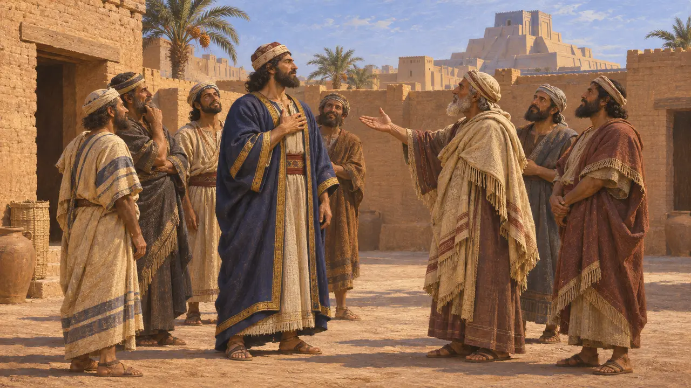
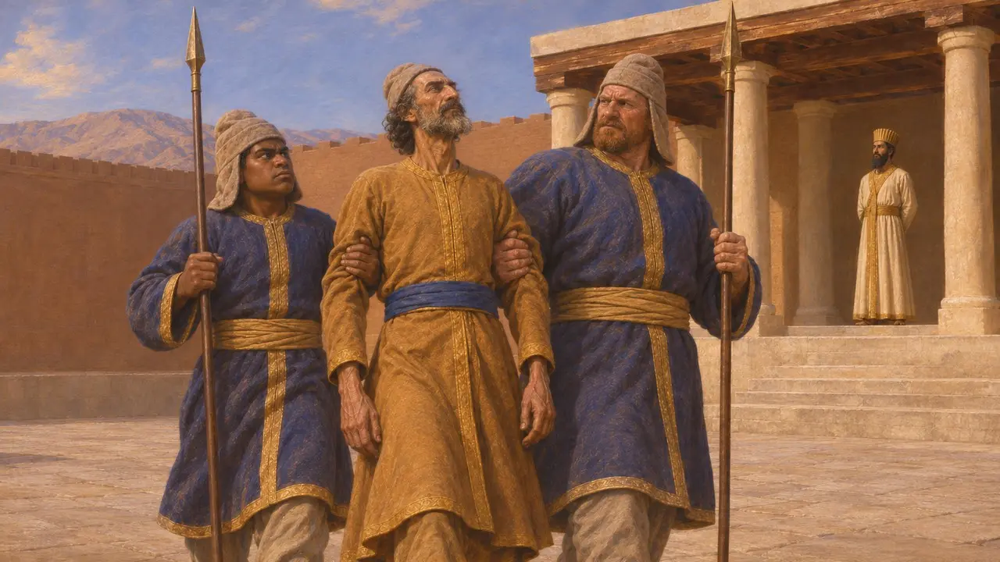
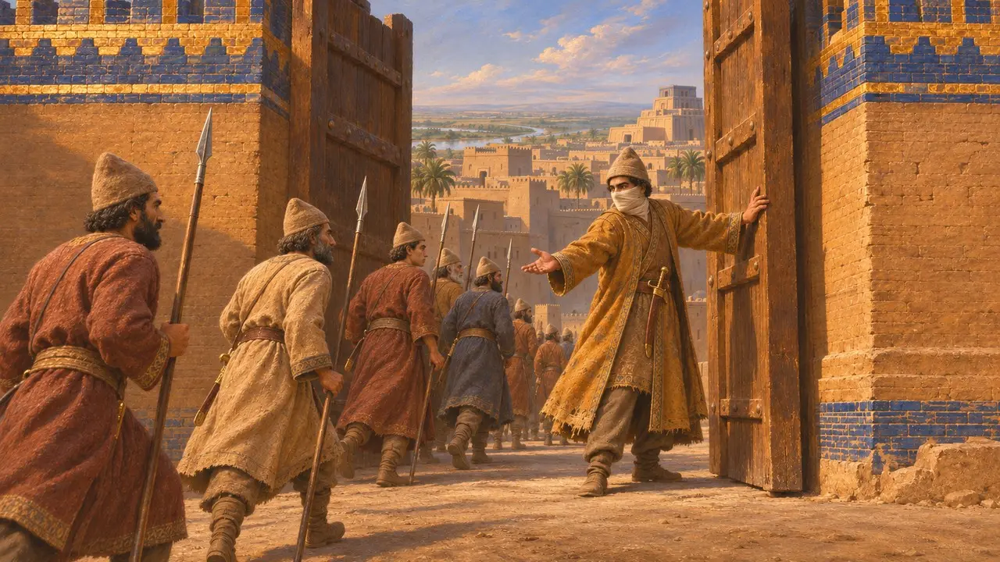

Enciclopédia › Batalhas e eventos

A revolta de Arakha
Segundo levante babilônico contra Dario, Babilônia, 521 AEC
No jogo: Nível 3: A Mentira
Em 521 AEC, um armênio chamado Arakha tomou o poder na Babilônia, afirmando ser Nabucodonosor, filho de Nabonido, o último rei nativo. Foi a segunda sublevação da Babilônia contra Dario em menos de um ano. O general de Dario, Vindafarna, o Intafernes dos gregos, retomou a cidade e Arakha foi empalado, o último rebelde derrotado no primeiro ano do reinado, segundo a narrativa de Behistun.
No jogo: A crônica do jogo registra a Babilônia se erguendo sob Arakha como um segundo Nabucodonosor e o general do Rei a retomando, como faz Behistun. Usa o nome grego Intafernes para o persa Vindafarna.

O que diz Behistun
Nos registrosA inscrição de Dario nomeia Arakha como um armênio, filho de Haldita, que se levantou num lugar chamado Dubala, na Babilônia, enquanto Dario estava na Pérsia e na Média. Ele disse ao povo que era Nabucodonosor, filho de Nabonido, e a Babilônia passou para o seu lado. Dario enviou Vindafarna, um persa que chama de seu súdito, com um exército. Vindafarna derrotou os babilônios e capturou Arakha e seus principais seguidores, que foram empalados na Babilônia.
DB §49-51

Nabucodonosor IV nas tábuas
Nos registrosTabuletas de contratos babilônicas foram datadas, por alguns meses em 521 AEC, pelo reinado de um rei Nabucodonosor, o governante que os historiadores modernos chamam de Nabucodonosor IV. Depois os escribas voltaram a datar por Dario. Behistun fornece o dia da captura de Arakha no calendário persa, geralmente convertido para o fim de novembro de 521 AEC. Arakha também aparece esculpido entre os reis rebeldes amarrados no relevo de Behistun.
A. Kuhrt, The Persian Empire, 2007

Quem foi Arakha
DisputadoO texto em persa antigo chama Arakha de armênio, e a versão babilônica usa o antigo nome Urartu para sua terra natal. Os historiadores debatem se ele veio de uma comunidade de deportados armênios ou urartianos estabelecidos na Babilônia, ou de fora. Também se discute por que os babilônios seguiriam um estrangeiro que se passava por Nabucodonosor. Isso pode mostrar quão forte permaneceu o desejo de um rei nativo após a revolta de Nidintu-Bel.
P. Briant, From Cyrus to Alexander, 2002

O general Intafernes
Relato antigoHeródoto conta Intafernes entre os sete persas que mataram em 522 AEC o homem sentado no trono, e a própria lista de auxiliares de Dario em Behistun menciona Vindafarna. Heródoto diz que Dario mais tarde mandou executar Intafernes sob suspeita de conspiração. Ele não menciona de modo algum Arakha nem a campanha da Babilônia.
Herodotus 3.70; Herodotus 3.118-119; DB §68

Zópiro e o cerco da Babilônia
Lenda posteriorHeródoto conta de uma revolta babilônica sob Dario em que o cerco se arrastou por um ano e sete meses. Só terminou quando um nobre chamado Zópiro cortou o próprio nariz e as orelhas, apresentou-se como desertor e entregou os portões. O relato não se encaixa bem em nenhuma das revoltas registradas em Behistun e soa como uma história de lealdade. Alguns estudiosos o associam vagamente às insurreições de 522-521 AEC, outros às revoltas posteriores sob Xerxes.
Herodotus 3.150-160
Fontes
- DB §49-51, §68
- A. Kuhrt, The Persian Empire: A Corpus of Sources from the Achaemenid Period, 2007
- P. Briant, From Cyrus to Alexander, 2002
- R. G. Kent, Old Persian: Grammar, Texts, Lexicon, 1953
- Herodotus 3.70, 3.118-119, 3.150-160